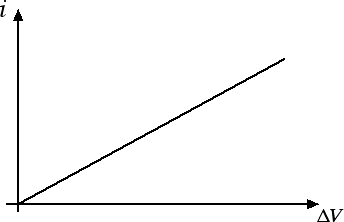

Corrente elettrica
Definizione di resistenza
Abbiamo visto nella precedente sezione che la differenza di potenziale ΔV fornita dal generatore mette in movimento le cariche elettriche in un circuito dando origine a una corrente elettrica i. A parità di differenza di potenziale applicata, la corrente i che passa in un circuito dipende dalle caratteristiche del materiale conduttore che si è utilizzato. Ogni conduttore manifesta infatti una certa resistenza al passaggio della corrente, dovuta agli urti tra gli elettroni in movimento all'interno del conduttore e gli atomi delle impurità presenti nel circuito.
In termini matematici si definisce resistenza R di un conduttore il rapporto tra la differenza di potenziale ΔV applicata e l'intensità di corrente i, ossia R = ΔV / i. Dal momento che la corrente i compare al denominatore abbiamo che in un conduttore con grande resistenza R circola una piccola corrente i, viceversa un conduttore con piccola resistenza R è caratterizzato da elevate correnti i. Possiamo dire che la resistenza R misura il grado di opposizione che incontrano gli elettroni per risalire la differenza di potenziale ΔV. L'unità di misura della resistenza è l'ohm (simbolo Ω, omega maiuscola): 1 Ω = 1 V / 1 A.
In generale, all'aumentare della differenza di potenziale ΔV aumenta anche la corrente i ma ci sono varie possibili relazioni tra i e ΔV a seconda del conduttore che prendiamo in considerazione. C'è però una categoria importante, costituita dai conduttori metallici, per i quali possiamo dire qualcosa di più. Infatti per i conduttori metallici vale la prima legge di Ohm, ossia la differenza di potenziale ΔV ai capi di un conduttore e la corrente i che vi circola sono direttamente proporzionali: ΔV = R · i e la resistenza R è la costante di proporzionalità. La curva caratteristica risulta pertanto una semiretta passante per l'origine:

Dunque se misuriamo con un voltmetro la differenza di potenziale ΔV e con un amperometro la corrente i scopriamo che in un metallo il rapporto R = ΔV / i è costante. Nei conduttori metallici la resistenza non dipende dalla differenza di potenziale ΔV che applichiamo al conduttore. Da cosa dipende allora la resistenza in un conduttore metallico? La risposta è data dalla seconda legge di Ohm. La resistenza R in un conduttore metallico dipende dal materiale di cui è fatto il filo, dalla sua lunghezza l e dalla sua sezione A. Più precisamente avremo che R = ρ l / A, ossia la resistenza è direttamente proporzionale alla lunghezza l del filo e inversamente proporzionale all'area A della sezione. La costante di proporzionalità ρ (simbolo che corrisponde alla lettera greca ro) dipende dal tipo di metallo che prendiamo in considerazione e va sotto il nome di resistività. Nella seguente tabella riportiamo la resistività di alcuni metalli comuni:
| Metallo | Rame | Argento | Acciaio | Alluminio |
| ρ (Ω · m) | 1.7 · 10-8 | 1.6 · 10-8 | 2 · 10-7 | 2.8 · 10-8 |
Resistività piccola vuol dire piccola resistenza, ossia buona capacità di condurre elettricità. Dal momento che ρ = R · A / l, l'unità di misura della resistività nel Sistema Internazionale è l'ohm per metro (Ω · m).